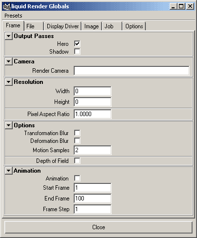
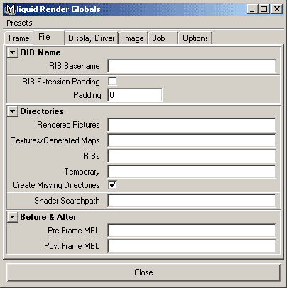

Liquid Render Globals
Introduction
All of Liquids Render Globals are store on a common Maya
node and easily accessable using common maya commands like setAttr or getAttr.
Here is a list of the available attributes, their type and the default setting.
When rendering Liquid accesses the Render Globals to control how you want the scene to be written. The globals let you specify frame ranges, motion blur, network options and much more. The globals are broken down into sub groups, seperated by tabs, they are Frame, File, Display Driver, Image, Network, Options and BMRT.
Frame
The Frame tab lets you set parameters that deal with the camera and motion.

Output Passes - the output pass option lets you control whether liquid writes out a Hero pass and/or a Shadow pass. A Hero pass is the default option and is generally always on. A Shadow pass is a render which set's all the surfaces to black when they are outside of a shadow and white when they are inside of a shadow, this is useful for various compositing tricks.
Render Camera - by right clicking on the entry box a list of renderable cameras will appear, selecting one will tell Liquid to use that camera as it's output view. By leaving this option blank Liquid will use the currently selected view. NOTE: You must specify a camera before doing a deferred rib generation.
Width & Height - leaving these values at 0 will cause Liquid to take the current views width and height as the output images width and height, anything else will set the desired width and height. NOTE: You must specify a width and height before doing a deferred rib generation.
Pixel Aspect Ratio - this will set the desired pixel aspect ratio that get's passed through to renderman for the render, the default is 1.0.
Transformation/Deformation Blur - Liquid can write out motion blur data to renderman in two different ways, either just Transformation Blur, or both Transformation and Deformation Blur. By turning just Transformation Blur on you are limiting yourself to full object transformations, for example, a ball flying through the air or an axe swinging. Turning Deformation Blur on allows per vertex motion blur, for example, a ball squashing and stretching or a creature holding the axe. When using deforming characters with skeletal systems and lattices it's advisable to use both. The amount of motion blur is controlled by the camera's shutter angle, this can be set on the camera node in Maya. NOTE: Transformation Blur *must* be on for Deformation Blur to work correctly.
Motion Blur Samples - the renderman spec allows defining multiple sample point for the motion blur effects. By default this is 2 - and in the past most Renderman renderers have only supported 2. Recently this has changed, by setting this to a higher value motion time samples will be written into the rib files, doing so will increase the rib size but will also increase the visual appeal of the motion blur, especially for objects that are arching and spinning.
Depth of Field - turning this on passes the depth of field information on the Maya camaera to Renderman.
Animation - by toggling this buttong on or off Liquid will either write out a single frame ( the current ) or the sequence specified.
Start and End Frame/Frame Step - these values control the start and end frames of the animation, this is the range used when animation output has been turned on. Setting the Frame Step will control the step size between each frame.
Image
The file tab lets you specify file related options such as output directories, padding and additional mel scripts.

"previewMode", "bool", "true"
"renderCamera", "string", ""
"dd1imageName", "string", ""
"dd1imageType", "string", "it"
"dd1imageMode", "string", "rgba"
"dd1paramType", "string", ""
"numDD", "long", "1"
"createOutputDirectories", "bool", "true"
"expandShaderArrays", "bool", "false"
"shaderPath", "string", ""
"ribName", "string", ""
"pictureDirectory", "string", ""
"textureDirectory", "string", ""
"ribDirectory", "string", ""
"tempDirectory", "string", ""
"deferredGen", "bool", "false"
"deferredBlock", "long", "1"
"preframeMel", "string", ""
"postframeMel", "string", ""
"ignoreAlfred", "bool", "false"
"remoteRender", "bool", "false"
"netRManRender", "bool", "false"
"minCPU", "long", "1"
"maxCPU", "long", "1"
"ignoreShadows", "bool", "false"
"fullShadowRibs", "bool", "false"
"binaryOutput", "bool", "false"
"compressedOutput", "bool", "false"
"renderAllCurves", "bool", "false"
"ignoreSurfaces", "bool", "false"
"ignoreDisplacements", "bool", "false"
"ignoreLights", "bool", "false"
"ignoreVolumes", "bool", "false"
"outputShadowPass", "bool", "false"
"outputHeroPass", "bool", "true"
"outputComments", "bool", "false"
"shaderDebug", "bool", "false"
"showProgress", "bool", "false"
"doAnimation", "bool", "false"
"startFrame", "long", "1"
"endFrame", "long", "100"
"frameStep", "long", "1"
"doPadding", "bool", "false"
"padding", "long", "0"
"numProcs", "long", "0"
"gain", "float", "1.0"
"gamma", "float", "1.0"
"xResolution", "long", "0"
"yResolution", "long", "0"
"pixelAspectRatio", "float", "1.0"
"imageDriver", "string", ""
"transformationBlur", "bool", "false"
"deformationBlur", "bool", "false"
"motionBlurSamples", "long", "2"
"depthOfField", "bool", "false"
"pixelSamples", "long", "3"
"shadingRate", "float", "1.0"
"bucketXSize", "long", "16"
"bucketYSize", "long", "16"
"gridSize", "long", "256"
"textureMemory", "long", "256"
"eyeSplits", "long", "10"
"imageDepth", "long", "8"
"PixelFilter", "long", "2"
"PixelFilterX", "float", "3.0"
"PixelFilterY", "float", "3.0"
"cleanRib", "bool", "false"
"cleanTex", "bool", "false"
"cleanShad", "bool", "false"
"cleanAlfred", "bool", "false"
"alfredTags", "string", "prman"
"alfredServices", "string", "pixarRender"
"renderCommand", "string", ""
"key", "string", "maya3.0"
"service", "string", "liquid"
"cleanAlf", "bool", "false"
"lastAlfredScript", "string", ""
"lastRibFile", "string", ""
"BMRTAttrs", "bool", "false"
"BMRTDStep", "long", "0"
"BMRTusePrmanDisp", "bool", "true"
"BMRTusePrmanSpec", "bool", "false"
"RadSteps", "long", "0"
"RadMinPatchSamples", "long", "1"
"simpleGlobalsWindow", "bool", "true"
"lazyCompute", "bool", "false"
"cropX1", "float", "0.0"
"cropX2", "float", "1.0"
"cropY1", "float", "0.0"
"cropY2", "float", "1.0"
"exportReadArchive", "bool", "false"
"alfredJobName", "string", ""
"shortShaderNames", "bool", "false"